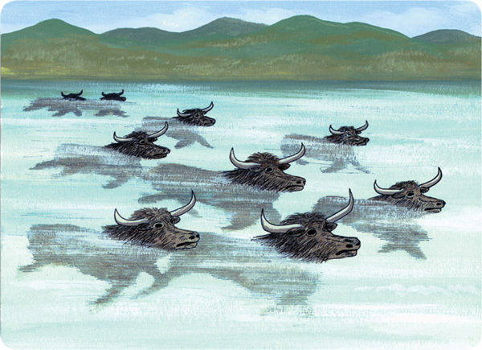

1846, M. Huc, Missionar in Tibet: »Mehr als 50 Ochsen im Eis gefangen … Eis war so klar, dass die Haltung der … Tiere deutlich wahrgenommen werden konnte - sie sahen aus, als ob sie noch schwämmen. Die
Adler und Raben hatten allerdings die Augen bereits ausgepickt.
Geschichte wird auch in 11. Ausgabe von Principles of Geology (Charles Lyell) erwähnt.